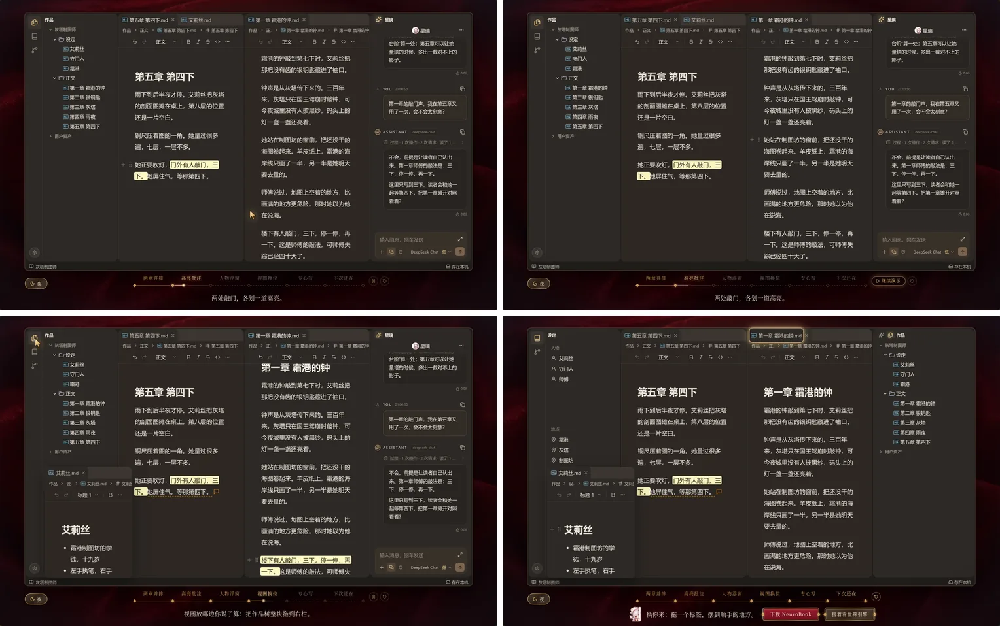
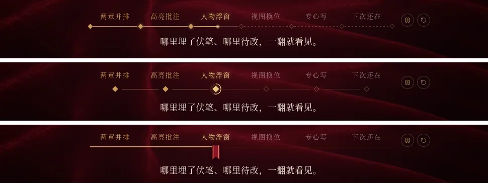
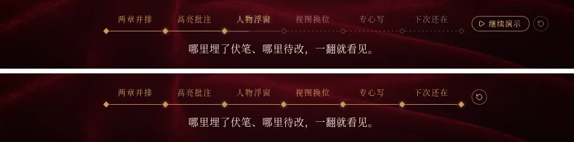
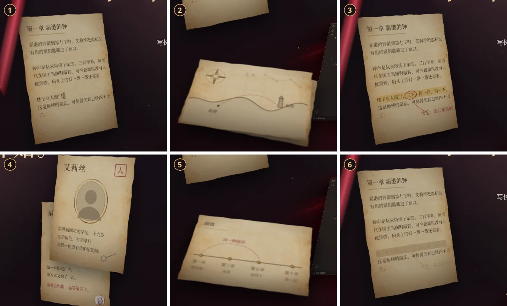
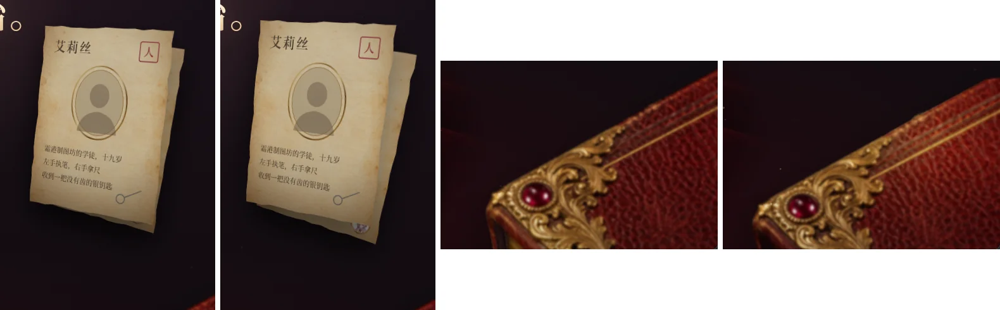
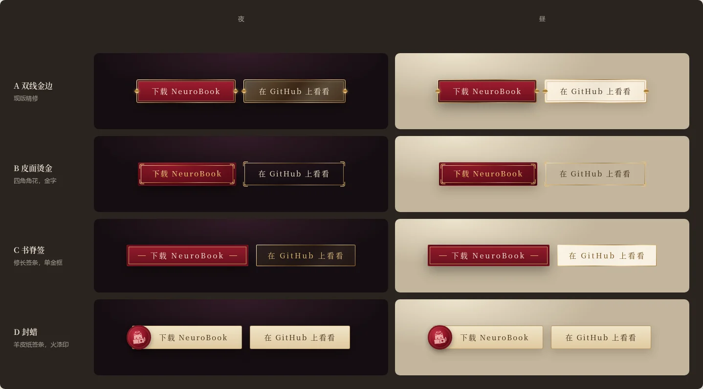

产品介绍首页：入殿·俯案成界（第 7 轮）
照第 6 轮会话里的三条意见改：第一幕不靠滚动，落地以后自己连播，字幕上面一条章节条看得出演到哪、这一段看完没有；拖动不再画上下左右中的落点分区；首屏的动静换成一条单线接力的叙事，加上跟着指针的视差与鎏金反光。
第一幕改成自己连播，看得出演到哪、看完没有吗？
推荐可以：访客什么都不用做，落地就从第一拍演到最后；章节条上看过的段是实金，正在演的那一段一道光丝往右推，说出这一拍的结论那一刻补满，停 0.7 秒再换下一拍，所以“看完没有”看条就知道。

左上：在演。右上：访客按了一下工作台，演示让开。左下：点了第四段。右下：演完，交给访客，第一章的标签上一圈金环，隔一会儿往右挪一下，示意能拖。
- 点哪一段就从那一段的开头演；条尾是暂停与从头再看。点后面的段，路过的拍快速摆上；点前面的段，按记下的样子一步摆回去再演。
- 访客一按工作台，演示让开：光丝定格、压暗，条尾换成“继续演示”；访客摆的样子留着，按了才从它走回去接着演。
- 滚走一半、或往回滚到首屏，演示自己停下，回来接着演；从不锁滚动，落地以后舞台再钉 0.8 屏，再往下滚就是下一幕。
- 拖动不画上下左右中的落点分区：实时布局本来就不画，拖作品入口这类走落点指示的，也只留落点的框。
章节条用哪一版？
推荐 A 古籍标尺：一条极细的暗金线分六格，光丝推到哪一眼就看见，最像书上的界尺，也最安静（@designer 第 7 轮推荐）。B 的进度只画在一粒菱形上，离远了看不清走了多少；C 的书签好看，但整幕一条通长的线，看不出这一段还剩多少。

从上到下：A 古籍标尺、B 菱形与进度环、C 赤红书签，都停在第三段演到一半。

A 让开以后（上）与演完以后（下）。
首屏的动静这样够了吗？
推荐两样都要：停着时有一条叙事自己往前走（约五秒一步，进屏一秒内起笔），鼠标一动，悬着的纸、书角与丝带跟着轻轻转向你；一个讲“从字到世界”，一个让人想伸手，都不抢标题与按钮。
第四步的那一下：金尘从手稿上的批注拱过标题，快落到人物卡上（花饰右边那一粒光点，后面拖着一串渐暗的金星）。

六步的特写，步数同下面的列表。

左两张：指针不在、指针停在人物卡上。右两张：指针在左与在右时，书角包金上的反光。
- 落墨：手稿上敲门那一行从左往右写出来，笔尖前一团湿墨，刚写的墨更黑，慢慢干。
- 一粒金尘从那一行飞到地图上：海岸线描出来、陆地染上、灰塔升起，红色航线从霜港流向灰塔。
- 高亮涂过那一行，红笔圈出“三下”，牵一条线写“伏笔：第五章再响”。
- 金尘从批注飞到人物卡，压在下面的星璃便笺斜着抽出一截，露出她的话与小头像。
- 金尘沿航线走到灰塔，剧情时间线换到地图上面，红线连起第一章与第五章那两声敲门。
- 墨沉回纸里（字与线先褪成纸色再隐掉），便笺收回，时间线换回下面，再来一圈（一圈约 30 秒）。
- 指针响应：纸、书角与丝带按远近挪几个像素，纸倾不过两度，带惯性；书角、花饰与按钮的金边上一团柔和的反光跟着走；停在哪张纸上，那张稳住、微微前倾，下面那张多探出一点；丝带的末端比书角慢半拍摆过去。顶光不动。
- 没做的（@designer 第 7 轮建议砍掉）：更快的 3D 翻牌与弹落，像抽卡；标题掠光与顶光扫动，像页游与探照灯。
白天这样成立吗？（第 6 轮的题，还没答）
推荐可以：夜是暗夜圣殿，昼是午后的抄经室：偏暖的灰石墙（比羊皮纸暗半阶，纸不会糊在底上）、左上高窗斜进来一道日光、深墨的字；工作台跟着换产品的日间配色。缺省仍是夜。

左：白天的首屏。右：白天的第一幕（字幕在丝绒上，昼夜都用浅色的字）。昼夜开关在导航最右端，落地以后在字幕那一条的一端，是同一个开关（图里是第 6 轮的右端；第 7 轮挪到左端，右端让给章节条的条尾）。

按钮用哪一版？（第 6 轮的题，还没答）
推荐 B 皮面烫金：和首屏那本书的皮面、鎏金包角是一套，主次分得最开（次按钮只留细金框与四角，白天不压人、夜里不沉底）。想最稳就选 A，它是第 5 轮那一版的精修。

- 悬停不扫光，只有受光的微变：赤红微微提温、金线亮半档、内框或菱形往外展一两像素、一圈淡暖晕；按下时下沉 1px。键盘聚焦有一道金色的焦点环。
- D 封蜡 @designer 建议降级当彩蛋：火漆印让重心偏左，白天的签条容易融进石墙。
已定
- 首页给搜索进来的人，做得像产品介绍；书庭这类页面另做、自由发挥（2026-11-26）
- 截图尽量少：直接把工作台复原，让人体验到拖动、分屏与布局动画的丝滑（第 1 轮）
- 第一屏把介绍说明白，同时要有高级精美的动画，让人想往下滚；往下滚进入滚动动画（第 1 轮）
- 基调取 w00050 t06 契约仪式页的史诗、神圣、西幻气氛，不复制；现有的 NovelAI 场景图不直接用（2026-11-26）
- 要讲的功能：写作与编辑器、世界引擎、剧情（在做）、星璃与 Agent、本地与开源、插件与 SDK、桌面版、模型自选；llmlint 不列（2026-11-26）
- 先做方向一《入殿·俯案成界》；材质可以用生成的贴图，首页可以用星璃的立绘与贴纸（2026-11-26）
- 首屏方向不变、先打磨材质；按钮加金边一类的装饰，往皇室奢华感走；工作台缺省夜间配色、可以切换（第 4 轮）
- 第一幕放慢讲清楚，加回浮窗、视图换位置、关掉再打开，和首屏一样华丽（第 4 轮与会话）
- 首句用 e3“每一个世界，都从一行字开始。”，配 From words to world.（第 4 轮与会话）
- 演示的拖动用实时布局；访客动过要有恢复动画；顺手介绍编辑器的标注与高亮；整个页面要有白天；首屏静中有动、纸条可以轮播；按钮出几版（第 5 轮之后的会话）
- 第一幕不用访客滚动：落地以后自动连播，访客愿意就停着看；拖动不要上下左右中的落点分区；首屏的动静要快一些、大一些、更高级（第 6 轮之后的会话）